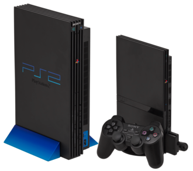
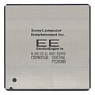
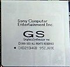
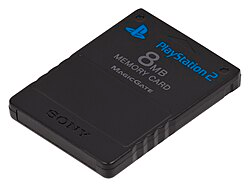
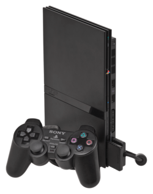

PlayStation 2
O PlayStation 2, também conhecido como PS2, é um console de jogos eletrônicos produzido e comercializado pela Sony Computer Entertainment. Sucessor do primeiro PlayStation, foi lançado inicialmente no Japão em 4 de março de 2000.
Posteriormente, chegou à América do Norte em 26 de outubro de 2000, à Europa em 24 de novembro e à Austrália em 30 de novembro do mesmo ano.
Como console da sexta geração, competiu principalmente com o Dreamcast, da Sega, o GameCube, da Nintendo, e o Xbox, da Microsoft.
Além dos jogos, o console também podia reproduzir DVDs, característica que ajudou a aumentar seu valor como equipamento doméstico no início dos anos 2000.
O PS2 também possuía retrocompatibilidade com grande parte da biblioteca e dos acessórios do PlayStation original. Seu hardware era baseado no processador Emotion Engine, desenvolvido em parceria entre Sony e Toshiba.
Ao longo de sua vida comercial, recebeu milhares de jogos e diferentes revisões de hardware. Em 2004, a Sony lançou uma versão menor e mais leve, conhecida como PlayStation 2 Slim.

Lançamento
O PlayStation 2 foi lançado inicialmente no Japão e posteriormente distribuído para outras regiões ao longo dos anos seguintes.
| JP | AN | EU | AU | TW | KR | CHN | BR |
|---|---|---|---|---|---|---|---|
No Brasil, apesar de o console já estar disponível anteriormente por meio de importadores, o lançamento oficial pela Sony ocorreu anos depois.
Especificações técnicas
| Foto | Componente | Frequência | Características |
|---|---|---|---|
|
 |
Emotion Engine | 294,912 MHz |
|
|
 |
Graphics Synthesizer | 147,456 MHz |
|

|
Memória principal | — |
|
|
 |
Memory Card | — |
|

|
Unidade óptica | — |
|
História
O sucessor do PlayStation foi anunciado pela Sony em março de 1999 e lançado no Japão em .
O lançamento gerou grande procura pelo console. A disponibilidade inicial limitada fez com que algumas unidades fossem revendidas por valores consideravelmente superiores ao preço oficial.
Parte do sucesso inicial veio da popularidade alcançada pelo primeiro PlayStation e da retrocompatibilidade oferecida pelo novo console.
Ao longo dos anos seguintes, a Sony expandiu a produção do console, disponibilizou novos kits de desenvolvimento e ampliou sua biblioteca de jogos.
Jogos online
Diferentemente de consoles posteriores, o PlayStation 2 não possuía inicialmente uma infraestrutura online centralizada integrada ao sistema.
A Sony disponibilizou o Network Adapter, que permitia conectar determinados modelos do console à rede. Jogos compatíveis utilizavam sua própria infraestrutura e serviços online.
O adaptador também permitia instalar um disco rígido interno em determinados modelos do PlayStation 2.
PlayStation 2 Slim
Em 2004, a Sony apresentou uma revisão significativamente menor e mais leve do console, popularmente conhecida como PlayStation 2 Slim.

O novo modelo reduziu consideravelmente as dimensões do aparelho e integrou uma porta Ethernet em boa parte de suas revisões.
Fim da produção
Mesmo após a chegada do PlayStation 3, o PlayStation 2 permaneceu disponível durante vários anos e continuou recebendo novos jogos.
A longa vida comercial tornou o console uma das plataformas mais duradouras da história dos videogames.
No Brasil
Antes de sua distribuição oficial pela Sony, o PlayStation 2 já era amplamente encontrado no mercado brasileiro através de importadores e do comércio paralelo.
Os elevados custos de importação ajudaram a tornar comum a comercialização de consoles trazidos de outros mercados. Muitos desses aparelhos eram modificados para executar jogos de diferentes regiões ou mídias não oficiais.
O PlayStation 2 Slim tornou-se especialmente popular no país durante a segunda metade dos anos 2000, período em que seu preço diminuiu significativamente.
A Sony posteriormente ampliou oficialmente sua presença no mercado brasileiro, com fabricação e distribuição local de determinados produtos relacionados ao console.
Destravamento e pirataria
O PlayStation 2 possui mecanismos de autenticação destinados a impedir a execução direta de cópias não autorizadas de jogos.
Durante sua vida comercial, diferentes métodos de modificação do console foram desenvolvidos. Eles podem ser agrupados em três categorias gerais:
- Modificação por hardware: instalação de componentes adicionais no console, normalmente conhecidos como modchips.
- Modificação por software: utilização de software não oficial para alterar o processo normal de inicialização ou carregamento de programas.
- Métodos baseados em troca de mídia: técnicas que exploravam o processo de validação realizado pela unidade óptica.
Algumas modificações também foram utilizadas para aplicações de homebrew, execução de software independente, ferramentas de manutenção e outros usos não fornecidos oficialmente pela Sony.
Tipos de mídia
O PlayStation 2 utiliza principalmente jogos distribuídos em CD-ROM e DVD-ROM. A unidade óptica também permite a reprodução de CDs de áudio e filmes em DVD compatíveis com a região do aparelho.